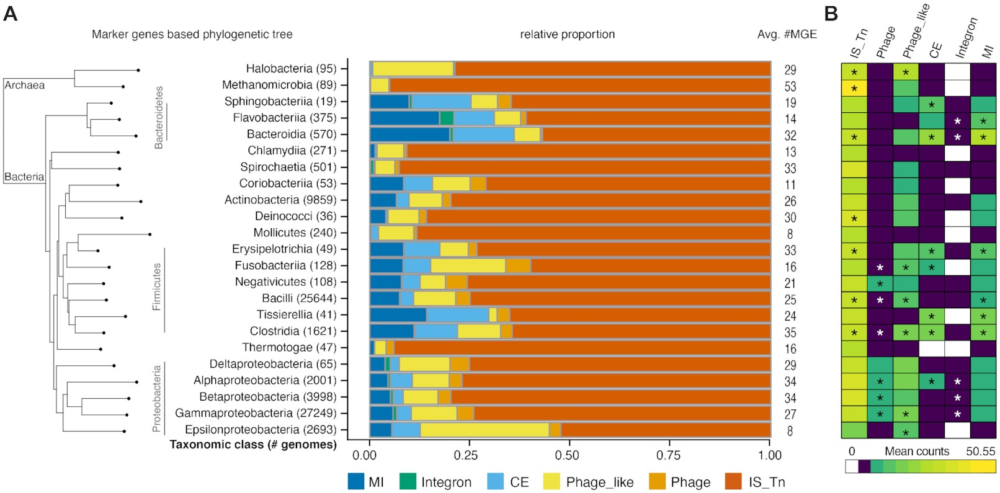
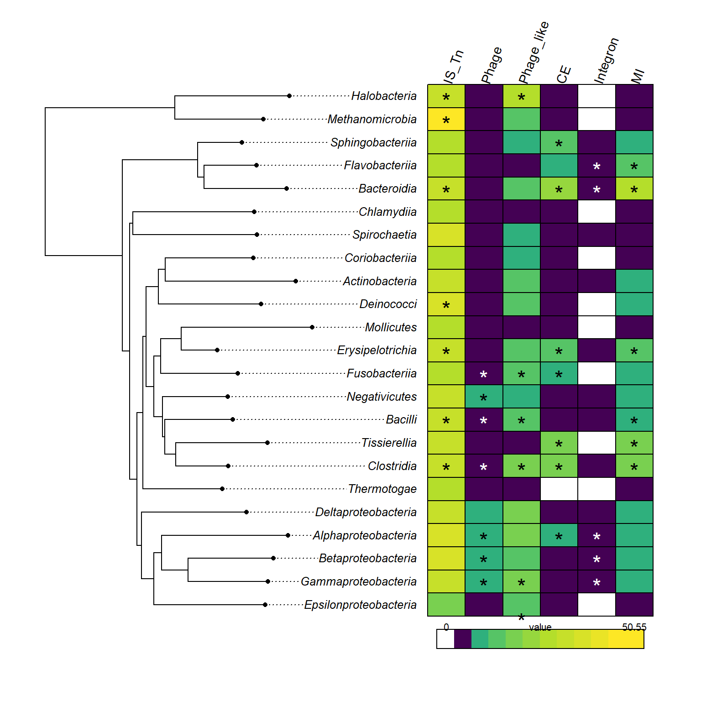
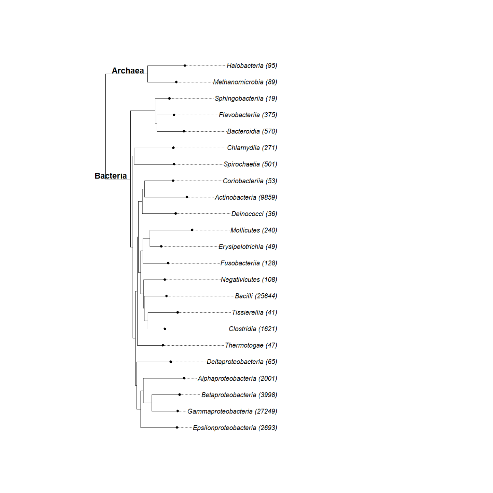

library(tidyverse) # Manipulacion de datos
library(reshape2)
library(phytools) # Manipulacion de arboles filogeneticos
library(viridisLite)
library(viridis)
library(scales)
library(cowplot)Figura 3
Distribución Taxonómica de los Elementos Genéticos Móviles

A. Prevalencia de las categorías de MGEs y predominio de los elementos transponibles en distintas clases taxonómicas (con al menos 10 genomas), ordenadas según la filogenia basada en genes marcadores taxonómicos (38).
B. Asociación de las categorías de MGEs (promedio de MGEs por especie) con diferentes clases taxonómicas (prueba de rango de Wilcoxon, * indica un valor de P < 0.05 después de la corrección de Bonferroni).
PASO 1: Importar datos
tax <- read_tsv("data/raw_data/species_with_atleast_2genomes.list.gz", col_names=F)
db <-read_tsv("data/processed_data/mge_bins_per_genome_final.txt.gz", col_names = T)
gs <-read_tsv("data/raw_data/genome_size.txt.gz", col_names = T)
class_tree <- read.tree("data/raw_data/progenomes2_class_tree.nwk")
glist <- read_tsv("data/raw_data/genome_status_supplementary_tableS2.txt.gz", col_names = T)Cargar paleta de colores
# Paleta general de colores
colc <- c("#D55E00", "#E69F00", "#F0E442", "#56B4E9", "#009E73", "#0072B2","#CECCCC")
names(colc) <- c("IS_Tn", "Phage", "Phage_like", "CE", "Integron", "MI", "Cellular") PASO 2: Manipulación y Limpieza de los datos
# Obtener los genomas con la mas alta calidad
glist_high <- glist %>%
filter(genome_quality == "high")# Renombra las columnas del dataframe tax para un nombre más legible
colnames(tax) <- c("specI", "genomeID", "kingdom", "phylum", "class", "genus")
# Reestructura la base de datos 'db' de formato ancho a largo usando reshape2::melt
mdb <- db %>% reshape2::melt()
# Renombra las columnas de la base de datos reestructurada para claridad
mdb <- mdb %>%
dplyr::rename(mge = variable, count = value, genomeID = 'Genome') %>%
# Filtra para incluir solo los genomas de alta calidad (genomas en glist_high$genome)
filter(genomeID %in% glist_high$genome)PASO 3: Data.frame con combinaciones
Datos de formato
Crear un data.frame que contenga para cada specI para cada MGE: recuentos genómicos (genomeCnt),
- conteos totales (cnt_tot),
- promedio de recuentos entre genomas (avg_cnt),
- número de genomas en los que estaba presente el MGE (pa),
- la fracción de genomas con el MGE presente (frac) más información taxonómica
# Selecciona las columnas necesarias para trabajar con los datos
mdb_cnt <- mdb %>% select(1, 7, 8)
# Obtiene los valores únicos de MGE
all_mge <- unique(mdb$mge)
# Inicializa un data.frame vacío donde se almacenarán las combinaciones
db_tax <- NULL
# Itera sobre todos los valores únicos de MGE
for(i in 1:length(all_mge)){
# Para cada MGE, se agrega una nueva columna 'mge' con el valor del MGE actual
db_tax_sing <- tax %>% add_column(mge = all_mge[i])
# Une el data.frame actual con el anterior (rbind), creando una tabla con todas las combinaciones
db_tax <- rbind(db_tax, db_tax_sing)
}
# Muestra las primeras filas del data.frame resultante
head(db_tax)# A tibble: 6 × 7
specI genomeID kingdom phylum class genus mge
<chr> <chr> <chr> <chr> <chr> <chr> <fct>
1 specI_v3_Cluster1 100053.SAMN02947772 Bacteria Spirochaetes Spirochaetia Leptospirales IS_Tn
2 specI_v3_Cluster201 1000561.SAMN02471202 Bacteria Proteobacteria Gammaproteobacteria Pseudomonadales IS_Tn
3 specI_v3_Cluster361 1000562.SAMN03114893 Bacteria Firmicutes Bacilli Lactobacillales IS_Tn
4 specI_v3_Cluster371 1000565.SAMN02471991 Bacteria Proteobacteria Betaproteobacteria Nitrosomonadales IS_Tn
5 specI_v3_Cluster564 1000568.SAMN00255229 Bacteria Firmicutes Negativicutes Veillonellales IS_Tn
6 specI_v3_Cluster565 1000569.SAMN00255226 Bacteria Firmicutes Negativicutes Veillonellales IS_TnPASO 4: Contar el número de genomas por especie y clase taxonómica
# Filtra los genomas que están en 'glist_high$genome' y los combina con los recuentos de MGE
db_cnt_all <- db_tax %>%
filter(genomeID %in% glist_high$genome) %>% # Filtra para obtener solo los genomas que están en 'glist_high$genome'
left_join(., mdb_cnt, by = c("genomeID", "mge")) # Realiza una unión de izquierda con 'mdb_cnt' usando 'genomeID' y 'mge'
# Reemplaza todos los valores NA en el data.frame por 0
db_cnt_all[is.na(db_cnt_all)] <- 0
# Contar el número de genomas por especie y clase taxonómica
db_cnt_all %>%
# Selecciona las columnas relevantes: 'specI', 'genomeID', y 'class'
select(specI, genomeID, class) %>%
# Elimina duplicados, dejando solo combinaciones únicas de especie, genoma y clase
unique() %>%
# Agrupa los datos por clase taxonómica ('class')
group_by(class) %>%
# Cuenta el número de genomas por cada clase
summarise(count = n()) %>%
# Filtra para solo mostrar las clases que tienen más de 9 genomas
filter(count > 9) %>%
head()# A tibble: 6 × 2
class count
<chr> <int>
1 Acidithiobacillia 18
2 Actinobacteria 9859
3 Alphaproteobacteria 2001
4 Bacilli 25644
5 Bacteroidia 570
6 Betaproteobacteria 3998# Crear un data.frame de presencia y ausencia
## Agregar información de presencia y ausencia
db_pa_all <- db_cnt_all %>% mutate(presAbs = ifelse(count > 0, 1, 0))
head(db_pa_all)# A tibble: 6 × 9
specI genomeID kingdom phylum class genus mge count presAbs
<chr> <chr> <chr> <chr> <chr> <chr> <fct> <dbl> <dbl>
1 specI_v3_Cluster1 100053.SAMN02947772 Bacteria Spirochaetes Spirochaetia Leptospirales IS_Tn 22 1
2 specI_v3_Cluster201 1000561.SAMN02471202 Bacteria Proteobacteria Gammaproteobacteria Pseudomonada… IS_Tn 5 1
3 specI_v3_Cluster361 1000562.SAMN03114893 Bacteria Firmicutes Bacilli Lactobacilla… IS_Tn 5 1
4 specI_v3_Cluster371 1000565.SAMN02471991 Bacteria Proteobacteria Betaproteobacteria Nitrosomonad… IS_Tn 24 1
5 specI_v3_Cluster564 1000568.SAMN00255229 Bacteria Firmicutes Negativicutes Veillonellal… IS_Tn 3 1
6 specI_v3_Cluster565 1000569.SAMN00255226 Bacteria Firmicutes Negativicutes Veillonellal… IS_Tn 2 1PASO 5: Agrupar todos los genomas por especie (specI)
## Resumir: avg_cnt = promedio de recuento por MGE por especie (specI), frac = fracción de genomas por especie con cada MGE
db_specI <- db_pa_all %>%
# Agrupar los datos por especie (specI) y MGE
group_by(specI, mge) %>%
# Contar el número de genomas por combinación de 'specI' y 'mge'
summarise(genomeCnt = n(),
# Calcular el promedio de recuento por MGE por especie
avg_cnt = mean(count),
# Calcular la presencia (1) total para cada MGE por especie
pa = sum(presAbs),
# Calcular el total de recuentos para cada MGE por especie
cnt_tot = sum(count)) %>%
# Calcular la fracción de genomas por especie que tienen el MGE
mutate(frac = pa / genomeCnt) %>%
# Unir los datos con la información taxonómica de 'tax' utilizando 'specI'
left_join(., tax, by = "specI") %>%
# Eliminar la columna 'genomeID' que no es necesaria
select(-genomeID) %>%
# Eliminar filas duplicadas
unique(.)
## Resumir: avg_cnt = promedio de recuento por MGE por genoma, frac = fracción de genomas con cada MGE
db_genome <- db_pa_all %>%
# Agrupar los datos por genoma (genomeID) y MGE
group_by(genomeID, mge) %>%
# Contar el número de combinaciones de genoma y MGE
summarise(genomeCnt = n(),
# Calcular el promedio de recuento de cada MGE por genoma
avg_cnt = mean(count),
# Calcular la presencia total de MGE en cada genoma
pa = sum(presAbs),
# Calcular el total de recuentos de MGE por genoma
cnt_tot = sum(count)) %>%
# Calcular la fracción de genomas con el MGE
mutate(frac = pa / genomeCnt) %>%
# Unir los datos con la información taxonómica utilizando 'genomeID'
left_join(., tax, by = "genomeID") %>%
# Eliminar filas duplicadas
unique(.) Crear data frames separados para los recuentos de MGE y las fracciones de MGE.
# Promedio de recuentos de cada MGE por especie (specI), donde los MGEs son las columnas y las especies (specI) las filas
all_cnt_specI <- db_specI %>%
select(specI, mge, avg_cnt) # Selecciona las columnas 'specI' (especie), 'mge' (MGE), y 'avg_cnt' (promedio de recuentos)
all_frac_specI <- db_specI %>%
select(specI, mge, frac) # Selecciona las columnas 'specI' (especie), 'mge' (MGE), y 'frac' (fracción de genomas con el MGE)
all_cnt_genome <- db_genome %>%
select(genomeID, mge, avg_cnt) # Selecciona las columnas 'genomeID' (ID de genoma), 'mge' (MGE), y 'avg_cnt' (promedio de recuentos)PASO 6: Análisis por especie (specI) a nivel de clase
Se utiliza la prueba de Mann-Whitney para analizar asociaciones de los MGEs a nivel de clase. El análisis se basa en la fracción de genomas por especiación (SpecI) que contiene el MGE para evitar sesgos de muestreo.
# entrada de datos
all_avg_cnt_tax_class <- db_specI %>%
select(specI, mge, avg_cnt, class) %>% # Selecciona las columnas: 'specI', 'mge', 'avg_cnt' y 'class'
filter(., !grepl("Hotspot", mge)) %>% # Filtra para excluir los MGEs que contienen "Hotspot" en su nombre
filter(., !grepl("Cellular", mge)) # Filtra para excluir los MGEs que contienen "Cellular" en su nombre
allMges <- unique(all_avg_cnt_tax_class$mge) # Extrae los valores únicos de MGEs
# Filtrar para clases con al menos 10 genomas
allClasses <- all_avg_cnt_tax_class %>%
filter(mge == all_avg_cnt_tax_class$mge[1]) %>% # Filtra para mantener solo el primer MGE
group_by(class) %>% # Agrupa los datos por clase
summarise(cntClass = n()) %>% # Cuenta cuántos genomas existen por clase
filter(cntClass > 9) # Filtra las clases con más de 9 genomas
# Selección final de datos para el análisis
all_avg_cnt_tax_class_sel_pre <- all_avg_cnt_tax_class %>%
filter(class %in% allClasses$class) # Filtra las especies para incluir solo aquellas pertenecientes a clases con al menos 10 genomasPASO 7: Normalización por tamaño de genoma
Se calcula el tamaño promedio del genoma por cada especie (SpecI) y se normaliza el recuento de MGEs por el tamaño del genoma.
# Promedio de tamaño de genoma por especie (SpecI)
gs_int <- gs %>%
group_by(SpecI_id_v3) %>%
summarise(avg_gs = mean(ProteinGeneCounts)) %>%
dplyr::rename(specI = SpecI_id_v3)
# Unir la información de tamaño de genoma con el promedio de recuentos de MGEs por especie y normalizar los recuentos por tamaño de genoma
all_avg_cnt_tax_class_sel <- left_join(all_avg_cnt_tax_class_sel_pre, gs_int, by = "specI") %>%
mutate(norm_count = avg_cnt / avg_gs) %>% # Normalización: se divide el recuento promedio por el tamaño del genoma
dplyr::rename(count = avg_cnt, avg_cnt = norm_count) # Renombrar las columnas para mayor claridadRealizar la prueba de Mann-Whitney para comparar recuentos de MGE entre clases.
MW_all <- NULL
for(i in 1:length(allMges)){ # Iterar sobre todos los MGEs
mgeX <- allMges[i] # Seleccionar el MGE actual
mgeDat <- all_avg_cnt_tax_class_sel %>% filter(mge == mgeX) # Filtrar los datos para el MGE seleccionado
MW <- sapply(seq_along(allClasses$class), function(j){
class_sel <- allClasses$class[j] # Seleccionar la clase actual
ingroup <- mgeDat %>% filter(class == class_sel) # Filtrar datos de la clase seleccionada (ingroup)
outgroup <- mgeDat %>% filter(class != class_sel) # Filtrar datos de las clases no seleccionadas (outgroup)
# Realizar la prueba de Mann-Whitney para comparar los recuentos promedio de MGE entre las clases
MWout <- wilcox.test(ingroup$avg_cnt, outgroup$avg_cnt, alternative = "greater")
out <- c(class_sel, MWout$p.value) # Guardar el resultado de la prueba (clase y p-value)
return(out)
})
MWOut <- as.data.frame(t(MW[2,])) # Convertir los resultados de la prueba en un data frame
colnames(MWOut) <- MW[1,] # Asignar los nombres de las clases como nombres de columna
rownames(MWOut) <- mgeX # Asignar el nombre del MGE como nombre de fila
MW_all <- rbind(MW_all, MWOut) # Unir los resultados de la prueba para todos los MGEs
}
# Transponer los resultados finales de la prueba
MW_all_mod <- as.data.frame(t(MW_all))
head(MW_all_mod) IS_Tn Phage Phage_like CE
Actinobacteria 0.999999917916124 1 1 1
Alphaproteobacteria 0.0178414060867117 0.0001231858382891 0.0588004481841716 8.61021742019938e-11
Bacilli 1.98748444995478e-06 8.27765421556004e-16 7.42579596027798e-13 0.854734318526737
Bacteroidia 0.00833722978655579 1 0.902740265915529 1.19966727801307e-41
Betaproteobacteria 0.107452414634065 2.00283676907074e-05 0.746214226095515 0.999999817280502
Chlamydiia 0.997521561347641 0.99991406834231 0.988672166822885 0.999936175938603
Integron MI
Actinobacteria 1 0.999999678245156
Alphaproteobacteria 0.00014653261414839 0.999997587920911
Bacilli 1 2.06109350055861e-10
Bacteroidia 9.34842687990597e-06 9.19715441949629e-44
Betaproteobacteria 0.000506083290088997 0.788218472081803
Chlamydiia 0.962626875393123 0.999998724073782Ajuste de valores p para múltiples comparaciones.
MW_all_adj <- NULL # Inicializar un objeto vacío para almacenar los resultados ajustados
# Iterar sobre cada columna de los resultados de la prueba de Mann-Whitney
for(k in 1:ncol(MW_all_mod)){
MW_all_mod2 <- as.matrix(MW_all_mod) # Convertir el data frame en una matriz para facilitar el acceso a las columnas
pVec <- c(MW_all_mod2[,k]) # Extraer la columna k, que contiene los valores p de la prueba de Mann-Whitney
adjP <- p.adjust(pVec, "BH") # Ajustar los valores p utilizando el método de Benjamini-Hochberg ("BH")
MW_all_adj <- cbind(MW_all_adj, adjP) # Unir los valores p ajustados a la matriz final
}
# Asignar los nombres de las columnas originales a los resultados ajustados
colnames(MW_all_adj) <- colnames(MW_all_mod)
# Convertir el resultado final en un data frame
MW_all_fin <- as.data.frame(MW_all_adj)Crear una tabla binaria con valores p < 0.1 --> 1, de lo contrario 0
MW_all_stat <- NULL # Inicializar un objeto vacío para almacenar los resultados binarios
# Iterar sobre cada columna de los resultados ajustados (MW_all_fin)
for(l in 1:ncol(MW_all_fin)){
# Crear una columna "signP" con valor 1 si el valor p es menor a 0.1, y 0 en caso contrario
MW_test <- MW_all_fin %>% mutate(signP=ifelse(MW_all_fin[,l]>0.1,0,1))
MW_all_stat <- cbind(MW_all_stat, MW_test$signP) # Unir los resultados binarios
}
# Convertir la matriz a un data frame
MW_all_stat <- as.data.frame(MW_all_stat)
# Asignar los nombres de las columnas y filas a la tabla binaria
colnames(MW_all_stat) <- colnames(MW_all_fin)
rownames(MW_all_stat) <- rownames(MW_all_fin)
# Sumar los valores de "signP" por fila para obtener el número total de pruebas significativas por MGE
MW_all_stat_sum <- MW_all_stat %>% mutate(sumSign=rowSums(.))
# Agregar los nombres de las filas a la tabla para obtener un formato adecuado
MW_all_stat2 <- cbind(rownames(MW_all_stat), MW_all_stat)
colnames(MW_all_stat2)[1] <- "class" # Renombrar la primera columna como "class"
MW_all_fin2 <- cbind(rownames(MW_all_fin), MW_all_fin)
colnames(MW_all_fin2)[1] <- "class"PASO 8: Tabla con pvalues y especies
# 1. Reorganizar el dataframe 'MW_all_fin2' de formato ancho a largo (long format).
# Esto es útil para preparar los datos para ggplot o análisis por variable.
melted_specI_class <- reshape2::melt(MW_all_fin2)
# 2. Añadir una columna 'signP' que marque con "*" si el valor (p-valor) es significativo (menor o igual a 0.05).
# Si el valor es mayor a 0.05, deja la celda vacía.
melted_specI_class1 <- melted_specI_class %>%
mutate(signP = ifelse(value > 0.05, "", "*"))
# 3. Calcular el promedio de 'count' por combinación de clase taxonómica ('class') y elemento genético móvil ('mge'),
# y renombrar la columna 'mge' como 'variable' para que coincida con el dataframe anterior.
all_avg_cnt_tax_class_sel1 <- all_avg_cnt_tax_class_sel %>%
group_by(class, mge) %>%
summarise(avg_class = mean(count), .groups = "drop") %>%
dplyr::rename(variable = mge)
# 4. Unir los datos con los valores derretidos y la información de significancia.
# La unión se hace por las columnas 'class' y 'variable'.
plot_table_w_g9 <- left_join(melted_specI_class1, all_avg_cnt_tax_class_sel1, by = c("class", "variable"))
# 5. (Redundante) Se repite la unión anterior. Puedes eliminar esta línea si no necesitas tener dos versiones del mismo objeto.
plot_table <- left_join(melted_specI_class1, all_avg_cnt_tax_class_sel1, by = c("class", "variable"))Datos para Mapa de colores para filogenia
## Crear el mapa de calor filogenético con normalización de los valores
normalize <- function(x) { # Función para normalizar los valores entre 0 y 1
x/max(x)
}
# Crear la matriz de datos para el mapa de calor filogenético
phylo_heatmap_mat <- all_avg_cnt_tax_class_sel1 %>%
# Filtrar clases que no contienen "NA"
filter(!grepl("NA ", class)) %>%
# Convertir los datos en formato ancho (cada variable como columna)
spread(variable, avg_class) %>%
# Seleccionar las variables de interés
dplyr::select(class, IS_Tn, Phage, Phage_like, CE, Integron, MI) %>%
# Establecer las clases como nombres de fila
column_to_rownames(var = "class") # Crear el árbol filogenético manteniendo solo las especies que están en la matriz de datos del mapa de calor
class_tree_w_g9 <- keep.tip(class_tree, tip = rownames(phylo_heatmap_mat))
## Ajuste de colores para el mapa de calor filogenético para datos sesgados
small_value <- unique(sort(unlist(phylo_heatmap_mat)))[2] # Encuentra el segundo valor más pequeño en la matriz de datos para establecer un umbral
small_value <- small_value - small_value %% 0.001 # Redondea el valor a 3 decimales para crear un valor pequeño ajustado
# Definir los puntos de corte para el mapa de calor según la distribución de los datos
heatmap_breaks <- c(0, small_value, 1, 2, 3, 4, seq(5, 55, 10))
# Definir una paleta de colores basada en viridis, con un sesgo hacia valores más bajos
plot_colors <- c("white", colorRampPalette((viridis(10)), bias = 5)(length(heatmap_breaks) - 2))
# Crear una matriz de significancia (signP) para etiquetar el mapa de calor
sig_mat <- plot_table_w_g9 %>%
select(class, variable, signP) # Selecciona las columnas relevantes de los datos
# Filtra las filas que contienen "NA" en la columna "class" y transforma los datos a formato ancho
sig_mat <- sig_mat %>%
filter(!grepl("NA ", class)) %>%
spread(variable, signP) %>% # Transforma los datos para que las variables sean columnas
column_to_rownames(var = "class") # Establece la columna "class" como nombres de fila
# Alinea la matriz de significancia con el árbol filogenético
sig_mat <- sig_mat[class_tree_w_g9$tip.label, colnames(phylo_heatmap_mat)]PASO 9: Cargar funciones
source("scripts/phylo_function.R")PASO 10: Obtener las coordenadas
# 1. Extraer coordenadas del heatmap filogenético para añadir anotaciones manuales posteriormente
xx_yy <- phylo.heatmap.coords(
class_tree_w_g9, # árbol filogenético de clases
phylo_heatmap_mat, # matriz de abundancias promedio por clase y MGE
fsize = c(0.8, 0.9, 0.7), # tamaños de fuente (árbol, heatmap, leyenda)
colors = plot_colors, # colores personalizados para el heatmap
grid = TRUE, # mostrar rejilla en el heatmap
split = c(0.7, 0.3), # proporción de espacio entre árbol y heatmap
lwd = 1, # grosor de líneas
breaks = heatmap_breaks, # puntos de corte para los colores
mar = c(1.2,1.2,1.2,1.2) # márgenes
)
## 2. Generar el heatmap con leyenda incluida, usando los mismos parámetros que el paso anterior
phylo.heatmap.legendmod(
class_tree_w_g9,
phylo_heatmap_mat,
fsize = c(0.8, 0.9, 0.7),
colors = plot_colors,
grid = TRUE,
split = c(0.7, 0.3),
lwd = 1,
breaks = heatmap_breaks,
mar = c(1.2,1.2,1.2,1.2)
)
## 3. Añadir símbolos de significancia ("*") en cada celda de la matriz que lo indique (en 'sig_mat')
for(i in 1:nrow(sig_mat)) {
for(j in 1:ncol(sig_mat)) {
if(sig_mat[i,j] == "*") {
rnm <- rownames(sig_mat)[i] # nombre de la fila (clase taxonómica)
cnm <- colnames(sig_mat)[j] # nombre de la columna (MGE)
# Añadir el símbolo "*" en la posición correspondiente del heatmap
points(
xx_yy$xx[j], xx_yy$yy[i], # coordenadas x, y para esa celda
cex = 1.5, # tamaño del símbolo
col = if (phylo_heatmap_mat[rnm, cnm] < heatmap_breaks[3]) "white" else "black",
pch = "*" # símbolo a dibujar
)
}
}
}
Figura 3A Barplot de abundancia relativa de MGEs por clase taxonómica
# 1. Seleccionar clases que aparecen al menos 10 veces para asegurar una representación confiable.
allclass_all <- all_avg_cnt_tax_class %>%
# Usar una sola MGE como referencia para el conteo por clase
filter(mge == all_avg_cnt_tax_class$mge[1]) %>%
group_by(class) %>%
summarise(cntclass = n()) %>%
# Incluir solo clases con al menos 10 ocurrencias
filter(cntclass > 9)
# 2. Filtrar datos: eliminar MGEs de tipo "Cellular" o "Hotspot" y mantener solo las clases seleccionadas previamente.
all_avg_cnt_tax_class_sel_all <- all_avg_cnt_tax_class %>%
filter(!grepl("Cellular", mge)) %>%
filter(!grepl("Hotspot", mge)) %>%
filter(class %in% allclass_all$class) %>%
group_by(mge, class) %>%
# Promediar por combinación de clase y MGE
summarise(avg_class = mean(avg_cnt), .groups = "drop")
# 3. Calcular la suma total de abundancia de MGEs por clase (para obtener proporciones después)
all_avg_cnt_tax_class_sel_all_mge_all <- all_avg_cnt_tax_class_sel_all %>%
group_by(class) %>%
summarise(total_mge = sum(avg_class), .groups = "drop")
# 4. Combinar abundancia promedio por clase y MGE con el total por clase
# Calcular la fracción relativa de cada MGE dentro de cada clase
all_avg_cnt_tax_class_sel_4bar_all <- left_join(
all_avg_cnt_tax_class_sel_all,
all_avg_cnt_tax_class_sel_all_mge_all,
by = "class"
) %>%
group_by(class, mge, total_mge) %>%
summarise(frac = avg_class / total_mge, .groups = "drop")# 5. Limpiar datos y ordenar clases según el orden filogenético del árbol
barplot_mat <- all_avg_cnt_tax_class_sel_4bar_all %>%
filter(!grepl("NA ", class)) # Eliminar clases no identificadas
barplot_mat$class <- factor(barplot_mat$class,
levels = class_tree_w_g9$tip.label) # Mantener orden del árbol filogenético
# 6. Preparar datos auxiliares para anotaciones en el barplot (por ejemplo, totales por clase)
barplot_mat_for_n <- all_avg_cnt_tax_class_sel_all_mge_all %>%
filter(!grepl("NA ", class))
barplot_mat_for_n$class <- factor(barplot_mat_for_n$class,
levels = class_tree_w_g9$tip.label)Crear barplot apilado (horizontal) de la proporción relativa de MGEs por clase taxonómica
barplot_specI_class_count_all <- ggplot(barplot_mat, aes(y = class, x = frac, fill = mge)) +
# Barras horizontales, borde gris
geom_bar(stat = "identity", color = "grey60") +
# Colores personalizados para los MGEs
scale_fill_manual("MGE", values = colc)
## Añadir detalles estéticos y anotaciones
barplot_specI_class_count_all +
# Límite extendido para espacio de anotaciones
scale_x_continuous(
breaks = c(0, 0.25, 0.5, 0.75, 1.0),
limits = c(0, 1.1)
) +
geom_text(
data = barplot_mat_for_n,
# Mostrar suma total de MGEs por clase
mapping = aes(y = class, x = 1.05, label = paste("", round(total_mge))),
inherit.aes = FALSE,
col = "black",
size = 6) +
labs(y = "", x = "Relative proportion") +
# Estética limpia estilo Cowplot
theme_cowplot(font_size = 20) +
# Etiquetas del eje X horizontales
theme(
axis.text.x = element_text(angle = 0),
legend.position = "bottom", # Leyenda abajo
axis.text.y = element_text(hjust = 0, vjust = 0.5)) # Alinear texto del eje Y